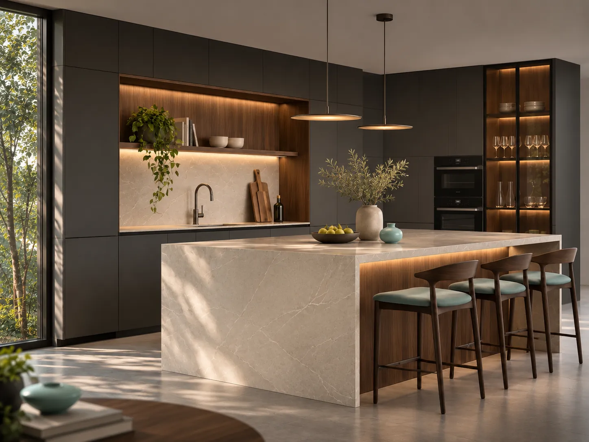

Tu próximo espacio comienza con una conversación.
Comparte algunas ideas sobre tu proyecto para preparar una solicitud de presupuesto.
Hablemos de tu idea.
¿Quieres renovar una cocina, diseñar gabinetes o aprovechar mejor un baño? Puedes preparar aquí un resumen de lo que necesitas.
Área de referencia: Ciudad Guayana, Bolívar, Venezuela. El alcance definitivo de instalaciones y desplazamientos estará sujeto a confirmación.
Antes de empezar.
¿Puedo solicitar un mueble de medidas especiales?
Ese es el objetivo del servicio a medida. Se estudiará la viabilidad según las medidas, los materiales y la capacidad de producción disponible.
¿Trabajarán en Puerto Ordaz y San Félix?
La intención inicial es atender Ciudad Guayana. Las zonas de desplazamiento y las condiciones finales se confirmarán al comenzar las operaciones.
¿Tienen un catálogo de materiales?
El catálogo inicial se definirá con proveedores locales y materiales disponibles. Las imágenes de la web son referencias de estilo, no un inventario de productos.